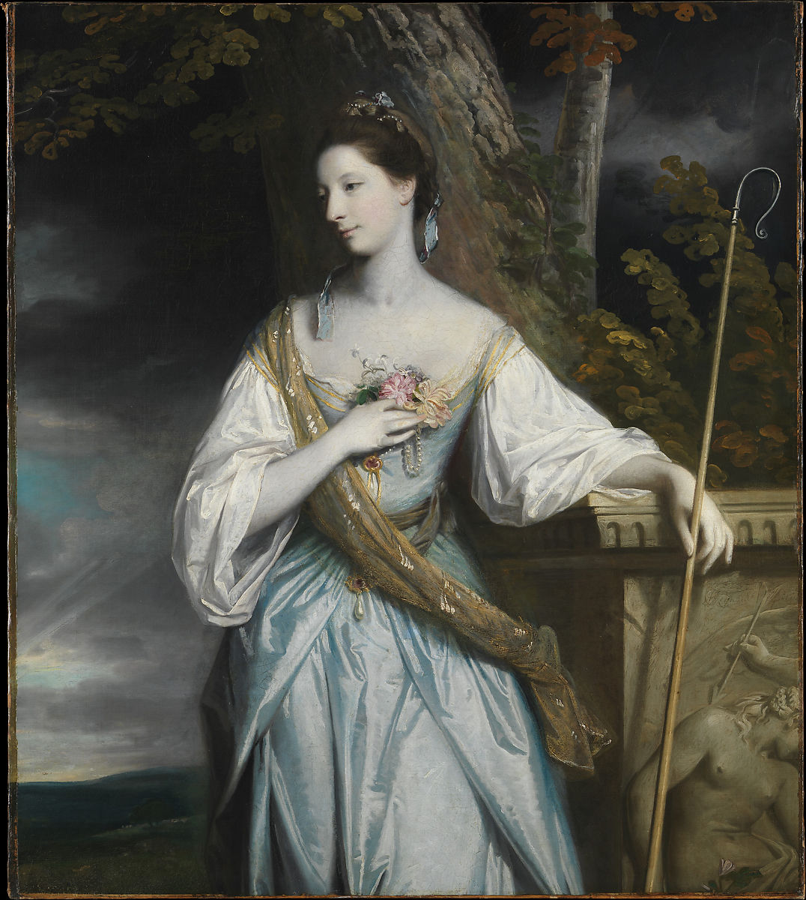

<head>
<meta charset="UTF-8" />
<meta name="keywords" content="drawing, painting" />
<meta name="description" content="drawings by Sunjy" />
<title>Sunjy</title>
<link rel="shortcut icon" type="image/x-icon" href="../../mImages/mCommon/favicon.ico" media="screen" />
<link rel="stylesheet" type="text/css" href="../../mCsses/mCommon/mCssA.css" />
<link rel="stylesheet" type="text/css" href="../../mCsses/mCommon/mCssB.css" />
<link rel="stylesheet" type="text/css" href="../../mCsses/mCommon/mCssC.css" />
<link rel="stylesheet" type="text/css" href="../../mCsses/mCommon/mCssD.css" />
<link rel="stylesheet" type="text/css" href="../../mCsses/mContent/mCssA.css" />
<link rel="stylesheet" type="text/css" href="../../mCsses/mContent/mCssB.css" />
<link rel="stylesheet" type="text/css" href="../../mCsses/mContent/mCssC.css" />
<link rel="stylesheet" type="text/css" href="../../mCsses/mContent/mCssD.css" />
</head>
<script type="text/javascript" src="../../mScripts/mContent/mContentAA.js" /></script>
<script type="text/javascript" src="../../mScripts/mContent/mContentAB.js" /></script>
<script type="text/javascript" src="../../mScripts/mContent/mContentAC.js" /></script>
<script type="text/javascript" src="../../mScripts/mContent/mContentAD.js" /></script>
<script type="text/javascript"></script> 
<script type="text/javascript">
document.write('<div class="mImgAbsolute"></div>');
/*
document.write('<p class="mFontSizeBColor" />From a white paper...</p>');
document.write('<table class="center"><tr><td>');
document.write('');
document.write('</td></tr></table>');
*/
</script>


<script type="text/javascript">
document.write('<p class="mFontSizeBColor" />Anne Dashwood, Later Countess of Galloway</p>');
document.write('<p class="mFontSizeSColor" />By Sir Joshua Reynolds, 1764. The sitter was the daughter of Sir James Dashwood, Member of Parliament for Oxford (whose portrait by Seeman is in the Aitken Galleries). She sat for Reynolds four times in the month preceding her marriage on June 13, 1764, to John Stewart, Lord Garlies, later seventh earl of Galloway. The artist presents her in the traditional guise of a shepherdess with a crook, but wearing a fashionable gauze scarf, rubies, and pearls.<br><br>Her pallor may in part be accounted for by the fact that the flesh tones have faded.</p>');
document.write('<table class="center" /><tr><td>');
document.write('<br>Her pallor may in part be accounted for by the fact that the flesh tones have faded." />');
document.write('</td></tr></table>');
</script>


